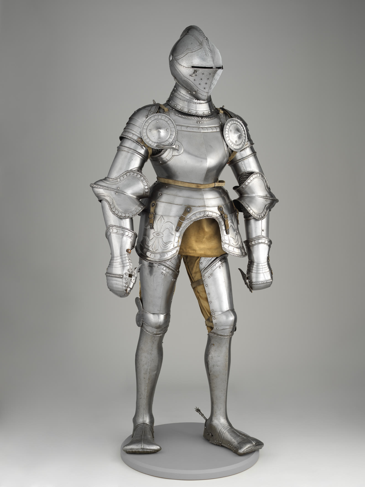

ASHFALL · SECTOR 07 / MUELLESIGILO · 03 OBJETIVOS
SECTOR 07 / MUELLE
No cruces la línea.
Misión de extracción. El HUD no decora: dice dónde estás, qué te queda y cuánto tiempo tienes.
84integridad
12cargador
03objetivos
A-07sector
OBJETIVO ACTIVORecuperar el núcleo
AMENAZA PATRULLA / 2
RUTA MUELLE / 03
TIEMPO 01:30
El núcleo sigue en el muelle. Tienes noventa segundos.